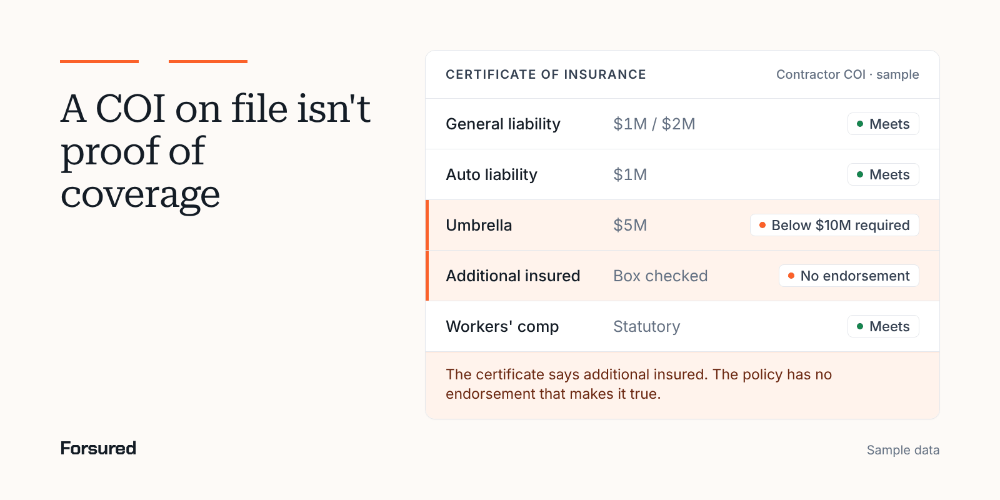

Blog / COI basics
COI basicsIs a certificate of insurance proof of coverage? Why a COI alone isn't enough
No. A certificate of insurance is evidence that a contractor bought certain policies on the day it was issued, and the form says it confers no rights on you. Proof of coverage lives in the policy and its endorsements, so a contractor COI only works as a starting point for checking them.

Every general contractor has a folder of contractor COIs. Most were looked at once, by someone in a hurry, when the contractor was onboarded. That folder feels like proof of coverage. It isn't, and the reasons are written on the certificate itself.
What is a certificate of insurance, and what does it prove?
A certificate of insurance proves that certain policies existed on the day it was issued, and not much more. IRMI defines it as a document giving evidence that certain general types of insurance have been bought, with the coverage types and limits. That's the whole job: evidence, on one date.
The standard ACORD 25 says so on its face. The 2025/12 edition is "issued as a matter of information only and confers no rights upon the certificate holder," and it doesn't amend, extend or alter the coverage of the policies listed. When the certificate and the policy disagree, the policy wins.
Why isn't a certificate of insurance proof of coverage?
A certificate of insurance isn't proof of coverage because courts mostly treat it the way the form describes itself. Koley Jessen notes that most courts won't let a certificate holder rely on a certificate whose contents are wrong. Taft points to a minority view: Ohio's Supreme Court in Pedler v. Aetna (1986) held an insurer to the coverage a certificate described. That split is a reason to check, not a reason to rely.
Risk Management Magazine collected the cases that show what goes wrong in practice:
- A policy was canceled for nonpayment after the certificate was issued, the certificate holder wasn't told, and it couldn't claim under the policy.
- A certificate and policy both named an owner as additional insured, but the endorsement covered only the named insured's own work. A different trade caused the fire, so there was no duty to defend.
- A certificate said a company was covered under a roofer's policy. The court found the policy gave no such coverage.
This is general information, not legal advice. How your state treats a certificate is a question for your attorney.
What can a contractor COI hide?
A contractor COI hides most of what decides a claim. The one-page form summarizes policies that run dozens of pages, and the details that matter most never make it onto the page.
| Item | What the certificate shows | What decides coverage |
|---|---|---|
| Additional insured | A checked ADDL INSD box | The endorsement form and its wording |
| Completed operations | Usually nothing | Whether the endorsement covers work after the job |
| Waiver of subrogation | A checked SUBR WVD box | The waiver endorsement |
| Exclusions | Nothing | The policy: height limits, residential work, labor law, EIFS and more |
| Aggregate | A box for policy, project or location | Whether a per project aggregate endorsement is attached |
| Limits | The amounts you asked for | The policy limits, less paid claims |
| Dates | The term on the day it was issued | Any cancellation or change since |
The 2025/12 edition adds a note worth knowing. It says the limits shown include amounts requested by the certificate holder and may not reflect higher policy limits, and that limits may have been reduced by paid claims. A certificate that shows your required limit may show only your required limit.
Which exclusions never show on a certificate of insurance?
Exclusions never show on a certificate of insurance, and they're where proof of coverage most often falls apart. The coverages grid lists policy types and limits. It doesn't list what the policy carves out. Common construction exclusions include work above a certain height, residential or condo projects, exterior insulation and finish systems (EIFS), and action-over claims under New York's labor law, where an injured worker sues the owner or GC. A roofer with a height exclusion or a framer with a residential exclusion can hand you a clean certificate for exactly the work the policy won't cover.
The only proof of coverage for those risks is the policy itself: the declarations, the forms schedule and the endorsements. On a high-risk trade, ask the broker to confirm in writing that no exclusion applies to your project's scope of work.
Does a checked additional insured box make you an additional insured?
A checked additional insured box doesn't make you an additional insured. The ACORD 25 says that if the certificate holder is an additional insured, the policy must have additional insured provisions or be endorsed, and that a statement on the certificate doesn't replace the endorsement.
The endorsement's wording matters too. Forms change often, a point Christopher Ruggiero of Cullen and Dykman made at IRMI's 2026 Construction Risk Conference: the coverage you negotiate only holds if the endorsement on the policy matches it. Check that additional insured status covers completed operations, and whether it applies only where a written contract requires it.
What should you check against your project requirements instead?
Instead of relying on a contractor COI, check it against the project's own requirements and get the documents behind it:
- Start from the project requirements, not a generic checklist. Each owner, lender and contract writes its own project requirements, with its own limits and wording.
- Read each certificate of insurance line by line against those project requirements: coverages, limits, dates, and a named insured that matches the contracting entity.
- Ask for the endorsements the project requirements depend on, and read the form numbers and wording.
- Check state rules on workers' comp and anti-indemnity in the COI requirements for your state, and whether the aggregate must be per project.
- Track renewals and expirations, because a certificate doesn't tell you when a policy is canceled.
Forsured checks each contractor COI and its endorsement forms against the requirements set for that project, flags each gap for your team to approve, and keeps checking for the life of the job.
Why do carriers care how you check contractor COIs?
Carriers care because a weak contractor COI program shows up in a GC's own losses. WTW says underwriters give favorable consideration to contractors with strong management of the trade partners they hire, and it expects umbrella and excess rates to rise another 5% to 15% in 2027. That's exactly the line where trade contractors trim, and exactly the line a file of unchecked certificates won't catch. Run a free COI risk check on one project to see what yours would show.
Get new posts by email.
New posts on contractor COIs and project requirements, plus the coverage gaps we're seeing on real projects. Short and plain.
You're on the list. Thanks for reading.
No spam. Unsubscribe from any email.
About Forsured
Forsured is construction insurance compliance software for general contractors and the brokers who insure their trade contractors. You set each project's insurance requirements once. Forsured reads every contractor COI and endorsement against them, flags each gap with the reason, and keeps checking through renewals until the job is done.
- Project requirements with exceptions, not one template for every job
- Endorsement review (additional insured, waiver of subrogation, primary and noncontributory), not just the certificate
- A shared workspace where the contractor's broker sees exactly what's missing
- A person on your team approves every result, with a full review history
“What stood out to us is that Forsured doesn't just organize the paperwork. It helps us understand what meets the project requirements, what needs attention, and what needs to happen next. That clarity across the GC, subcontractor, and broker is where we see the real value.”
Send us one project's requirements and a contractor COI or two. We'll show you every gap we find, free.
Common questions
Is a certificate of insurance proof of coverage?
No. A certificate of insurance is evidence that certain policies were in force when it was issued. The standard ACORD 25 says it's issued as a matter of information only, confers no rights on the certificate holder, and doesn't amend, extend or alter the policies. The policy and its endorsements decide coverage, so ask for them when the contract depends on them.
Does being listed on a contractor COI make me an additional insured?
No. Additional insured status comes from an endorsement on the contractor's policy, and the ACORD 25 says a statement on the certificate doesn't replace it. Ask for the endorsement form and check that its wording matches your contract, including ongoing and completed operations, and that it isn't limited to the contractor's own work in a way your contract doesn't allow.
Can I sue the insurer if the certificate of insurance was wrong?
Usually not. Most courts hold that a certificate holder can't rely on a certificate that conflicts with the policy, because the form disclaims any rights. A few states, including Ohio under Pedler v. Aetna (1986), have held insurers to what a certificate described. It's general information, not legal advice, so ask your attorney about your state.
What can a certificate of insurance hide?
A certificate of insurance can hide exclusions, the exact wording of additional insured and waiver endorsements, whether the aggregate is shared across every job, limits that only match what you requested, and a cancellation that happened after it was issued. None of those show on the one-page form, and each one can decide whether a claim is paid.
How often should contractor COIs be checked?
Contractor COIs should be checked at onboarding and again whenever a policy renews, changes or nears expiration. On a long project that means checking continuously rather than once at prequalification, because a certificate is accurate only on the day it was issued and policies can be canceled or reissued with new terms mid-job.
Sources
- Certificate of insurance (definition), IRMI
- ACORD 25 Certificate of Liability Insurance (2025/12 edition), New York State Department of Financial Services
- The Limitations of Certificates of Insurance, Risk Management Magazine, Oct 1, 2021
- Be Careful With Certificates Of Insurance On Construction Projects, Taft, Sep 21, 2011
- Certificates of Insurance: Proceed with Caution, Koley Jessen, Jan 31, 2023
- Christopher Ruggiero to speak at the 2026 IRMI Construction Risk Conference, Cullen and Dykman
- Insurance Marketplace Realities 2027: Construction, WTW, Oct 1, 2026
We link to the original reporting and research behind every post. This post is general information, not legal or insurance advice: Forsured is a software company, not a law firm or a licensed insurance agency, so confirm anything you'll rely on with your broker or attorney. Spotted something we got wrong? Write to hello@forsured.ai and we'll fix it.
About this article
Written by the Forsured team.
Published . Updated . Every source is linked above.